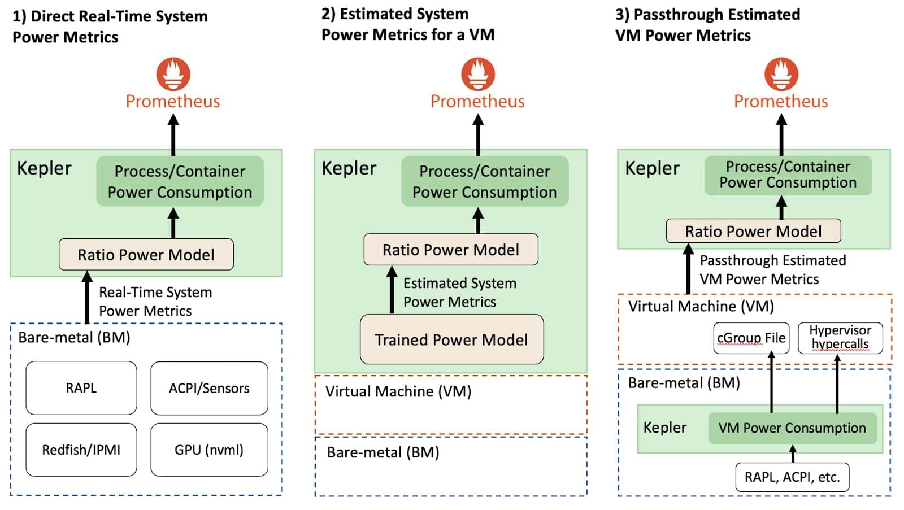

Kepler Deep Dive
Kepler components and what they do
The Kepler stack comprises Kepler and Kepler Model Server
Kepler
Kepler, Kubernetes-based Efficient Power Level Exporter, offers a way to estimate power consumption at the process, container, and Kubernetes pod levels.
How Kepler collects data?
Kepler uses the following to collects power data:
EBPF, Hardware Counters
Kepler can utilize a BPF program integrated into the kernel's pathway to extract process-related resource utilization metrics or use metrics from Hardware Counters. The type of metrics used to build the model can differ based on the system's environment. For example, it might use hardware counters, or metrics from tools like eBPF, depending on what is available in the system that will use the model.
Real-time Component Power Meters
Kepler also collects real-time power consumption metrics from the node components using various APIs such as,
- Intel Running Average Power Limit (RAPL) for CPU and DRAM power
- NVIDIA Management Library (NVML) for GPU power
Platform Power Meters
For platform power, i.e, the entire node power Kepler uses:
- Advanced Configuration and Power Interface (ACPI)
- Redfish/Intelligent Power Management Interface (IPMI)
- Regression-based Trained Power Models when no real-time power metrics are available in the system.
Kepler Model Server
The Model Server is used to train power models, and it can be optionally deployed alongside Kepler to help Kepler select the most appropriate power model for a given environment. For example, considering the CPU model, available metrics and the required model accuracy. In the future, Kepler will also be able to select the power model with the same logic that the Model Server has.
The Model Server trains its models using Prometheus metrics from a specific bare-metal node. It records how much energy the node consumed and the resource utilization of containers and system processes (OS and other background processes). The container metrics are obtained from running various small tests that stress different resources (CPU, memory, cache, etc.), like using a tool called stress-ng.
When creating the power model, the Model Server uses a regression algorithm. It keeps training the model until it reaches an acceptable level of accuracy.
Once trained, the Model Server makes these models accessible through a github repository, where any Kepler deployment can download the model from. Kepler then uses these models to calculate how much power a node (VM) consumes based on the way its resources are being used. The type of metrics used to build the model can differ based on the system's environment. For example, it might use hardware counters, or metrics from tools like eBPF, depending on what is available in the system that will use the model.

For details on the architecture follow the documentation on Kepler Model Server.
Collecting System Power Consumption – VMs versus BMs
Depending on the environment that Kepler was deployed in, the system power consumption metrics collection will vary. For example, consider the figure below, Kepler can be deployed either through BMs or VMs environments.

Direct Real-Time System Power Metrics (Bare Metals)
In bare-metal environments that allow the direct collection of real-time system power metrics, Kepler can split the power consumption of a given system resource using the Ratio Power model. The APIs that expose the real-time power metrics export the absolute power, which is the sum of the dynamic and idle power. To be more specific, the dynamic power is directly related to the resource utilization and the idle power is the constant power that does not vary regardless if the system is at rest or with load. This concept is important because the idle and dynamic power are split differently across all processes.
Estimated System Power Metrics (Virtual Machines)
In VM environments on public clouds, there is currently no direct way to measure the power that a VM consumes. Therefore, we need to estimate the power using a trained power model, which has some limitations that impact the model accuracy.
Kepler can estimate the dynamic power consumption of VMs using trained power models. Then, after estimating each VM's power consumption, Kepler applies the Ratio Power Model to estimate the processes' power consumption. However, since VMs usually do not provide hardware counters, Kepler uses eBPF metrics instead of hardware counters to calculate the ratios. It is important to highlight that trained power models used for VMs on a public cloud cannot split the idle power of a resource because we cannot know how many other VMs are running in the host. We provide more details in the limitation section in this blog. Therefore, Kepler does not expose the idle power of a container running on top of a VM.
Power models are trained by performing regression analysis (like Linear or Machine Learning (ML)-based regression) on data collected during benchmark tests. This data includes both resource utilization and power consumption on a Bare-metal node, forming the foundation for the power model estimation.
Passthrough Estimated VM Power Metrics
Kepler is first deployed in the bare-metal node (i.e. the cloud control plane), and it continuously measures the dynamic and idle power that each VM consumes using real-time power metrics from the BM. Then, Kepler exposes this power data with the VM. This information can be made available to the VM through “Hypervisor Hypercalls” or by saving the numbers in special files that the VM can access (e.g. cGroup file mounted in the VM). Then, by using the VM power consumption, another Kepler instance within the VM can apply the Ratio Power Model to estimate the power used by processes residing in the VMs.
Note
The passthrough approach is still in exploratory and currently not available in Kepler.
Ratio Power Model Explained
As explained earlier the dynamic power is directly related to the resource utilization and the idle power is the constant power that does not vary regardless if the system is at rest or with load. This concept is important because the idle and dynamic power are split differently across all processes. Now we can describe the Ratio Power model, which divides the dynamic power across all processes.
The Ratio Power model calculates the ratio of a process's resource utilization to the entire system's resource utilization and then multiplying this ratio by the dynamic power consumption of a resource. This allows us to accurately estimate power usage based on actual resource utilization, ensuring that if, for instance, a program utilizes 10% of the CPU, it consumes 10% of the total CPU power.
The idle power estimation follows the GreenHouse Gas (GHG) protocol guideline, which defines that the constant host idle power should be split among processes/containers based on their size (relative to the total size of other containers running on the host). Additionally, it's important to note that different resource utilizations are estimated differently in Kepler. We utilize hardware counters to assess resource utilization in bare-metal environments, using CPU instructions to estimate CPU utilization, collecting cache misses for memory utilization, and assessing Streaming Multiprocessor (SM) utilization for GPUs utilization.
How is the power consumption attribution done?
Now that we have explained how Kepler gathers data and train model and the Ratio Power Model let's dig into the power consumption attribution.
Once all the data that is related to energy consumption and resource utilization are collected, Kepler can calculate the energy consumed by each process. This is done by dividing the power used by a given resource based on the ratio of the process and system resource utilization. We will detail this model later on in this blog. Then, with the power consumption of the processes, Kepler aggregates the power into containers and Kubernetes Pods levels. The data collected and estimated for the container are then stored by Prometheus.
Kepler finds which container a process belongs to by using the Process ID (PID) information collected in the BPF program, and then using the container ID, we can correlate it to the pods' name.
More specifically, the container ID comes from /proc/PID/cgroup, and Kepler uses the Kubernetes APIServer to keep an updated list of pods that are created and removed from the node.
The Process IDs that do not correlate with a Kubernetes container are classified as system processes (including PID 0).
In the future, processes that run VMs will be associated with VM IDs so that Kepler can also export VM metrics.
Pre-trained Power Model Limitations
It's important to note that pre-trained power models have their limitations when compared to power models using real-time power metrics.
-
System-Specific Models: Pre-trained power models are system-specific and vary based on CPU models and architectures. While not perfect, generic models can offer insights into application power consumption, aiding energy-efficient decisions.
-
Overestimation in VM Power Consumption: Using bare-metal power models for single VMs can lead to overestimation as these models might not reflect the actual power usage when multiple VMs share a node. The power curve might show reduced power consumption when more CPUs are in use, impacting accurate estimation.
-
Challenges with Idle Power Allocation: Dividing idle power among VMs based on their size relative to others on the host is challenging in public cloud environments where the number of concurrently running VMs on a host is not determinable. Estimating idle power for each VM accurately becomes complex due to this limitation.
-
Dependency on Hypervisor Reporting: Pre-trained power models for VMs rely on accurate reporting of CPU register values by the hypervisor. Overprovisioning of resources in certain public cloud VMs can impact the accuracy of resource utilization metrics, affecting the reliability of these power models.
Note
For more detailed explanation on the limitations of pre-trained power model read the blog by Kepler's maintainers.
- Explain the models. How the models are different and is there a right use case/scenario for when to apply a particular model over another?
- AbsComponentModelWeight
- AbsComponentPower
- AbsModelWeight
- AbsPower
- DynComponentModelWeight
- DynComponentPower
- XGBoost